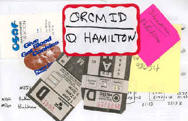

|
|

As I move between the blogosphere, Meet-ups, and Geek Dinners, I have the pleasure of meeting and being met by fellow bloggers. And, for some reason, meetings of bloggers are occasions for people expanding their snapshot albums. Me too!I have come to make great occasions for travel adventures on the available public transit as part of getting to and from Blogger events. The step I have avoided so far is bringing my bicycle by bus.
This collage is typical of my travel adventuring. On October 5, I went to from West Seattle to Tukwila to give blood and pick up some At-a-Glance plastic calendar sheets for planning and managing my M.Sc in IT dissertation project. I had a carefully-prepared bus itinerary that worked my way up to Bellevue and over to the Crossroads Mall where there was a combined Web Loggers Meet-Up and Geek Dinner.
I haven't been good at loading pictures and reporting on the meet-ups and geek dinners. So this is an effort to start filling in the blanks. The events covered here at the moment are
2006-01-21: Launching Naked Conversations
2005-02-19: Vancouver Northern Voices Blogger Conference
2004-12-15: Seattle Weblogger Meet-Up
2004-10-05: Bellevue Web-Logger Meet-Up and Geek Dinner [Search Champs #1]
2004-09-15: Seattle Weblogger Meet-Up
|
|
You are navigating Orcmid's Lair |
created 2004-11-22-18:42 -0800 (pst) by
orcmid |